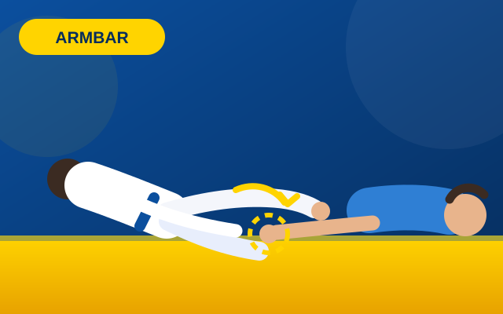

Armbar — finalização de braço
O atacante prende a perna do oponente entre suas, estica o braço e aplica pressão na articulação com o quadril e as pernas. É uma das finalizações mais rápidas e funciona bem a partir da guarda fechada ou da posição de norte.
- Posição: pernas "escadas" no lado do braço preso.
- Chave: joelho e quadril alinhados com o ombro do oponente.
- Atenção: mantenha a cabeça próxima ao joelho para não ser reversal.